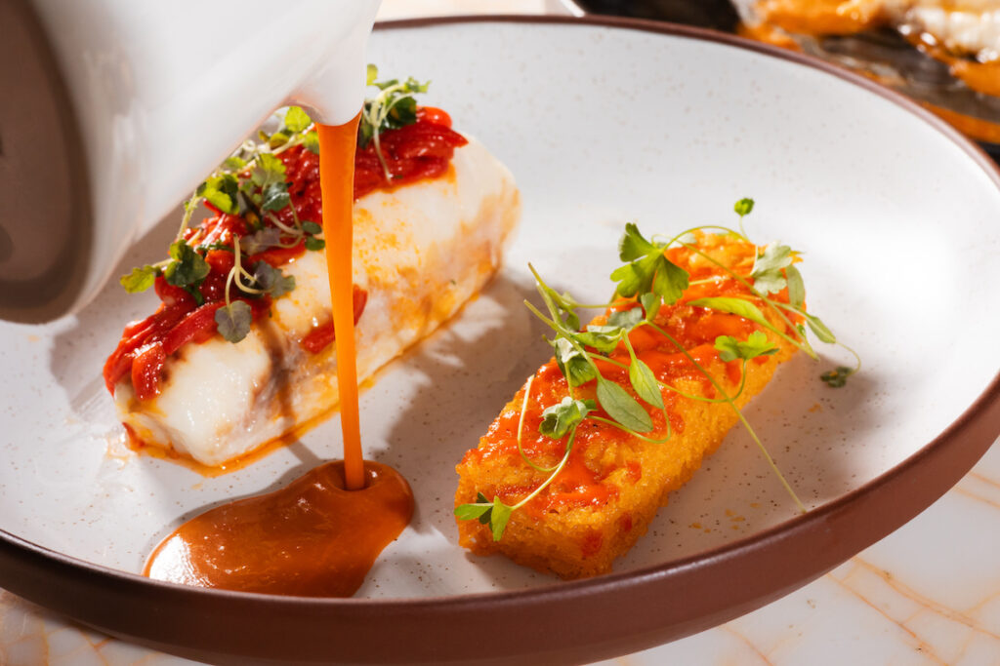

Tervetuloa Horizon Havenin ravintolaan, lämpimään ja tunnelmalliseen ruokailupaikkaan Italian upeissa maisemissa. Inspiraatiomme kumpuaa pohjoisen keittiön tuoreista ja korkealaatuisista raaka-aineista, ja menumme tarjoaa unohtumattomia makuelämyksiä, joissa sesongin raaka-aineet pääsevät oikeuksiinsa. Sijaitsemme Horizon Haven -hotellin katutasossa, vain lyhyen matkan päässä alueen viehättävimmistä nähtävyyksistä.
 |
AamiainenTarjoamme laajan valikoiman tuoreita ja laadukkaita herkkuja, jotka sopivat niin perinteiseen kuin moderniinkin makuun. Nauti vastaleivottuja leipiä ja croissanteja, sesongin tuoreita hedelmiä, paikallisia juustoja sekä lämpimiä suosikkeja, kuten munakokkelia ja pekonia. Meiltä löytyy myös gluteenittomia ja vegaanisia vaihtoehtoja – kaikki tarjoiltuna kauniissa ja rennossa ympäristössä. |
|---|---|
 |
LauantaiBrunssiViikonlopun kohokohta – Horizonin lauantaibrunssi! Tule herkuttelemaan ystävien tai perheen kanssa monipuolisella brunssivalikoimallamme, joka yhdistää aamun ja lounaan parhaat maut. Tarjotan ruokia, kuten kauden kasvisruokia, meheviä lihapatoja ja kala-annoksia, sekä tietenkin runsas jälkiruokapöytä täynnä makeita herkkuja. Brunssi on täydellinen tapa nauttia rennosta viikonlopusta ja upeista maisemista hotellimme ravintolassa. |
|  | LounasPäivän paras tauko odottaa sinua Horizonin lounaalla. Keittiömme tarjoaa herkullisen ja vaihtuvan lounaslistan, joka painottaa tuoreita ja paikallisia raaka-aineita. Nauti kevyistä salaateista, klassisista lounasannoksista tai päivän keitosta, joka lämmittää niin kehoa kuin mieltäkin. Lounas on täydellinen valinta, olitpa liikkeellä työasioissa tai viettämässä rauhallista päivää kaupungilla. |
 |
A La CarteIllallinen Horizonissa on elämys, jota et halua jättää väliin. À la carte -listamme vie sinut makumatkalle, jossa yhdistyvät kansainväliset vivahteet ja paikalliset erikoisuudet. Valitse huolella valmistettuja alkupaloja, täydellisesti kypsennettyjä pääruokia ja elegantteja jälkiruokia, jotka kruunaavat aterian. Sommelierimme auttaa sinua löytämään täydellisen viinin annoksesi seuraksi. Ravintolan tunnelmallinen sisustus ja upeat näkymät tekevät illallisestasi unohtumattoman. |